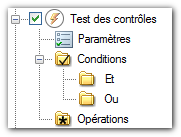

Le bandeau de cette fenêtre permet un certain nombre de fonctionnalités.
- L'icône permet d'initialiser la liste afin de repartir à zéro. Si une liste est déjà présente le message suivant apparaît.

- L'icône
 permet d'enregistrer une liste d'actions (ou projet) qui sont régulièrement à exécuter. L'extension de ces fichiers sauvegardés est ".mcact".
permet d'enregistrer une liste d'actions (ou projet) qui sont régulièrement à exécuter. L'extension de ces fichiers sauvegardés est ".mcact".
- L'icône permet d'ouvrir une liste pré-enregistrée (ou projet) afin de la modifier ou de l'utiliser pour le traitement.
- L'icône permet de créer une action comportant les dossiers "Paramètres", "Conditions" avec "Et" "Ou" (dossiers vides), "Opérations".

- L'icône
 permet de créer une action systématique comportant les dossiers "Paramètres", "Conditions" avec "Et" "Ou", "Opérations". Cette action placera automatiquement une condition "Systématique" dans le dossier "Et". Bien entendu cette condition pourra être supprimée par la suite si elle s'avère inutile.
permet de créer une action systématique comportant les dossiers "Paramètres", "Conditions" avec "Et" "Ou", "Opérations". Cette action placera automatiquement une condition "Systématique" dans le dossier "Et". Bien entendu cette condition pourra être supprimée par la suite si elle s'avère inutile.

- La liste de toutes les actions peut être "Réduite" ou "Développée" en appuyant respectivement sur les icônes et .
- Les icônes et permettent de "Cocher" ou "Décocher" toutes les actions ou bien vous pouvez cocher ou décocher une action complète ou quelques conditions et/ou opérations à ne pas prendre en compte.

- L'icône permet de supprimer les actions qui ont été cochées (suppression définitive).
- L'icône permet de mettre à jour la propriété sélectionnée.
- On peut modifier l'ordre des actions, des conditions ou des opérations dans lequel elles seront exécutées. En les sélectionnant puis en en appuyant sur les flèches "Monter" et "Descendre".